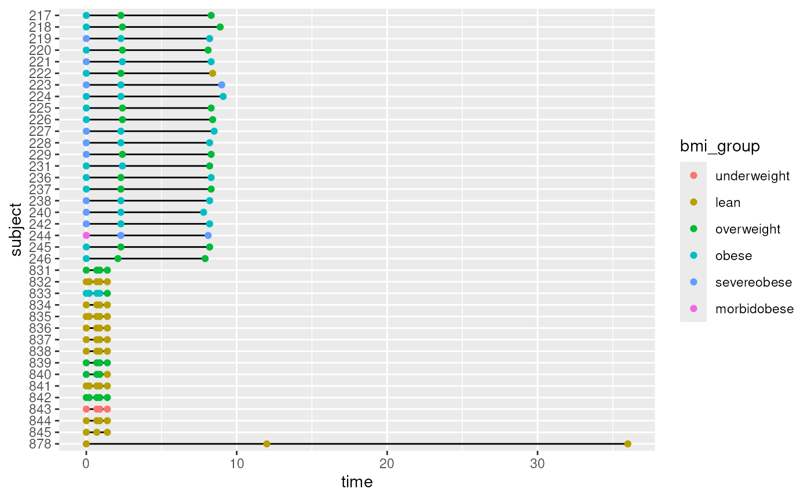
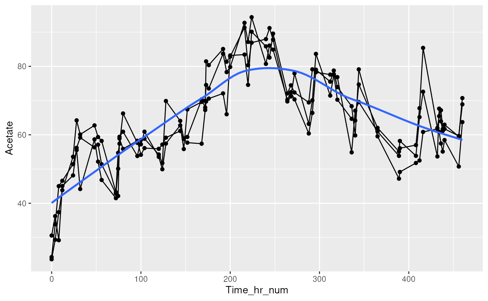

vignettes/tempoPlot.Rmd
tempoPlot.RmdtempoPlot is a package in the mia family
for visualizing longitudinal microbiome data. It plots results computed
with miaTime
and mia.
plotSwimmer() shows when each subject was sampled.
data("hitchip1006", package = "miaTime")
x <- hitchip1006
x <- x[, x$subject %in% names(which(table(x$subject) >= 3))]
plotSwimmer(x, time.col = "time", group = "subject",
colour.by = "bmi_group")
plotTrend() visualizes the trajectory of a feature,
colData column, or ordination component over time for each subject.
data("minimalgut", package = "miaTime")
plotTrend(minimalgut, y = "Acetate", time.col = "Time_hr_num",
group = "StudyIdentifier", smooth = "loess")
sessionInfo()
#> R version 4.6.1 (2026-06-24)
#> Platform: x86_64-pc-linux-gnu
#> Running under: Ubuntu 24.04.5 LTS
#>
#> Matrix products: default
#> BLAS: /usr/lib/x86_64-linux-gnu/openblas-pthread/libblas.so.3
#> LAPACK: /usr/lib/x86_64-linux-gnu/openblas-pthread/libopenblasp-r0.3.26.so; LAPACK version 3.12.0
#>
#> locale:
#> [1] LC_CTYPE=en_US.UTF-8 LC_NUMERIC=C
#> [3] LC_TIME=en_US.UTF-8 LC_COLLATE=en_US.UTF-8
#> [5] LC_MONETARY=en_US.UTF-8 LC_MESSAGES=en_US.UTF-8
#> [7] LC_PAPER=en_US.UTF-8 LC_NAME=C
#> [9] LC_ADDRESS=C LC_TELEPHONE=C
#> [11] LC_MEASUREMENT=en_US.UTF-8 LC_IDENTIFICATION=C
#>
#> time zone: UTC
#> tzcode source: system (glibc)
#>
#> attached base packages:
#> [1] stats graphics grDevices utils datasets methods base
#>
#> other attached packages:
#> [1] tempoPlot_0.99.3 knitr_1.52 BiocStyle_2.41.0
#>
#> loaded via a namespace (and not attached):
#> [1] SummarizedExperiment_1.43.0 gtable_0.3.6
#> [3] xfun_0.62 bslib_0.12.0
#> [5] ggplot2_4.0.3 htmlwidgets_1.6.4
#> [7] Biobase_2.73.2 lattice_0.23-1
#> [9] yulab.utils_0.2.5 vctrs_0.7.3
#> [11] tools_4.6.1 generics_0.1.4
#> [13] stats4_4.6.1 parallel_4.6.1
#> [15] tibble_3.3.1 pkgconfig_2.0.3
#> [17] Matrix_1.7-6 RColorBrewer_1.1-3
#> [19] S7_0.2.2 desc_1.4.3
#> [21] S4Vectors_0.51.10 lifecycle_1.0.5
#> [23] compiler_4.6.1 farver_2.1.2
#> [25] treeio_1.37.1 textshaping_1.0.5
#> [27] Biostrings_2.81.9 Seqinfo_1.3.2
#> [29] codetools_0.2-20 htmltools_0.5.9
#> [31] sass_0.4.10 lazyeval_0.2.3
#> [33] yaml_2.3.12 tidyr_1.3.2
#> [35] crayon_1.5.3 pkgdown_2.2.1
#> [37] pillar_1.11.1 jquerylib_0.1.4
#> [39] BiocParallel_1.47.0 SingleCellExperiment_1.35.2
#> [41] DelayedArray_0.39.8 cachem_1.1.0
#> [43] abind_1.4-8 nlme_3.1-171
#> [45] tidyselect_1.2.1 digest_0.6.39
#> [47] purrr_1.2.2 dplyr_1.2.1
#> [49] bookdown_0.48 splines_4.6.1
#> [51] labeling_0.4.3 TreeSummarizedExperiment_2.21.0
#> [53] fastmap_1.2.0 grid_4.6.1
#> [55] cli_3.6.6 SparseArray_1.13.4
#> [57] magrittr_2.0.5 S4Arrays_1.13.2
#> [59] ape_5.8-1 withr_3.0.3
#> [61] rappdirs_0.3.4 scales_1.4.0
#> [63] rmarkdown_2.32 XVector_0.53.0
#> [65] matrixStats_1.5.0 otel_0.2.0
#> [67] ragg_1.5.2 evaluate_1.0.5
#> [69] GenomicRanges_1.65.4 IRanges_2.47.5
#> [71] mgcv_1.9-4 rlang_1.3.0
#> [73] Rcpp_1.1.2 tidytree_0.4.8
#> [75] glue_1.8.1 BiocManager_1.30.27
#> [77] BiocGenerics_0.59.12 jsonlite_2.0.0
#> [79] R6_2.6.1 MatrixGenerics_1.25.0
#> [81] systemfonts_1.3.2 fs_2.1.0